GIOS Lecture Notes - Part 2 Lesson 3 - PThreads Case Study
PThreads References
PThread Creation
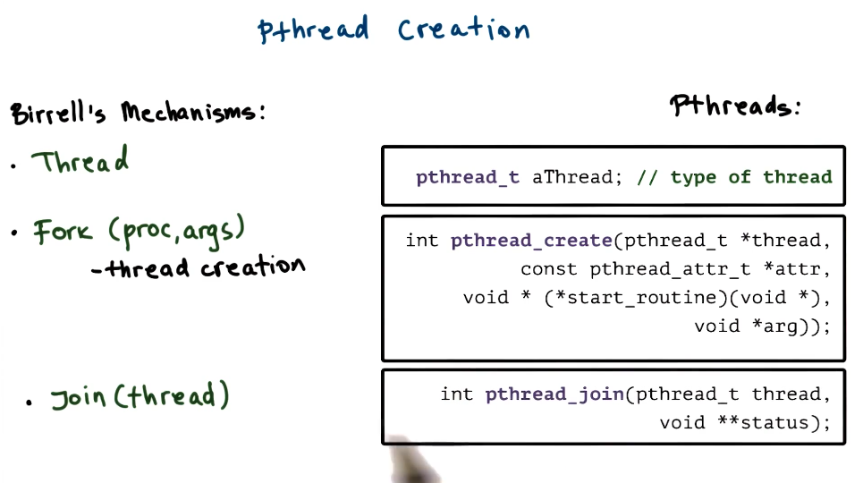
- pthread_attr_t
- specified in pthread_create
- defines featuress of nrew thread
- stack size
- joinable
- priority
- inheritance
- scheduling policy
- system/process scope
- has default behavior with NULL in pthread_create 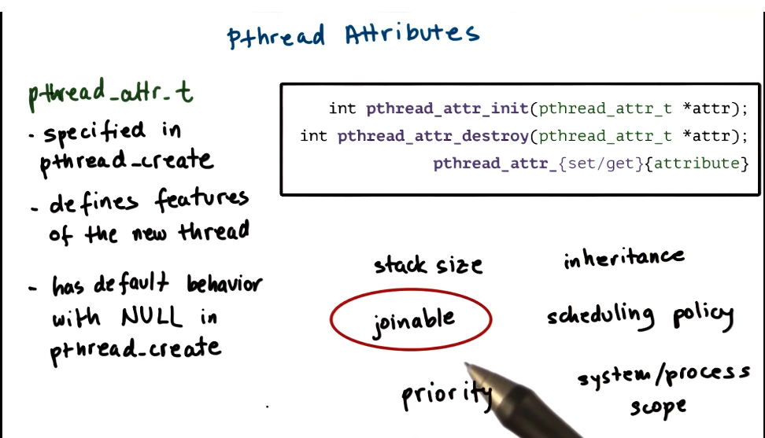
- detaching pthreads
- default: joinable thread
- parent thread should not exit until children threads have joined back
- if parent exits early you get zombies
- in pthreads you can detach children such that they cannot be joined, and can continue on after parent is killed
- int pthread_detach() - takes thread as argument
- for detached threads, must be killed off using void pthread_exit()
example:
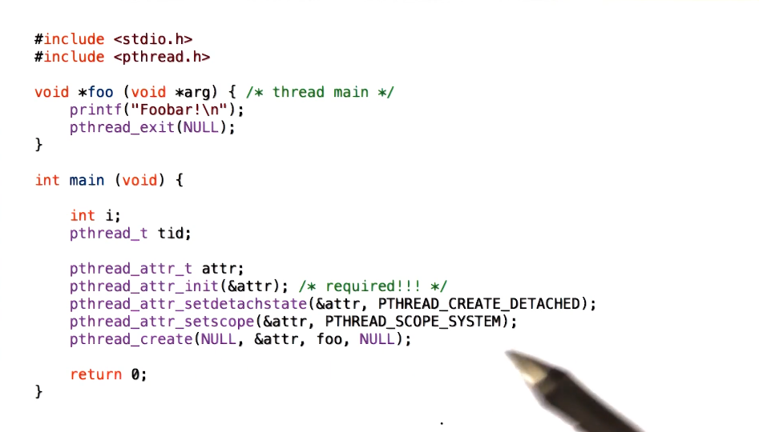
There is a typo @4:58 with the code example. The pthread_create() function should be passed the following parameters:
pthread_create(&tid, &attr, foo, NULL)
Compiling Pthreads
- need
#include <pthread.h>for library - need to link at compile time. which flag depends on platform.
gcc -o main main.c -lpthreadgcc -o main main.c -pthread
- check return values of common functions! always good, but extra needed here
Example 1
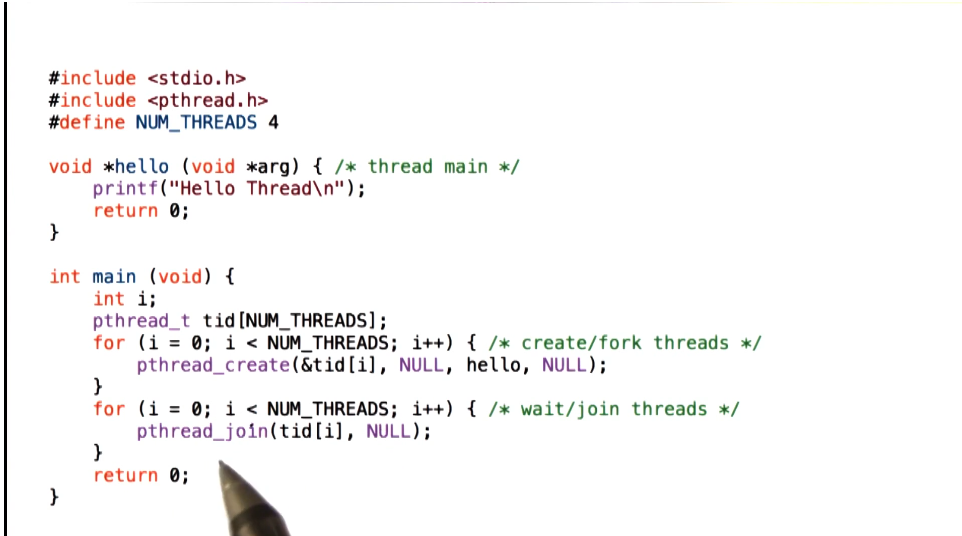
- Create threads with default attributes (first NULL in pthread create)
- Pass no arguments to threads (second NULL in pthread create)
- Default configuration of pthread is joinable, so can pass to pthread_join() without issue
Example 2
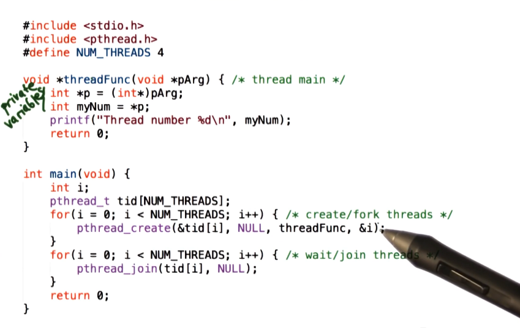
- Threads each execute a function that takes an argument, *pArg, so we pass &i as the argument to each pthread_create call
Example 3
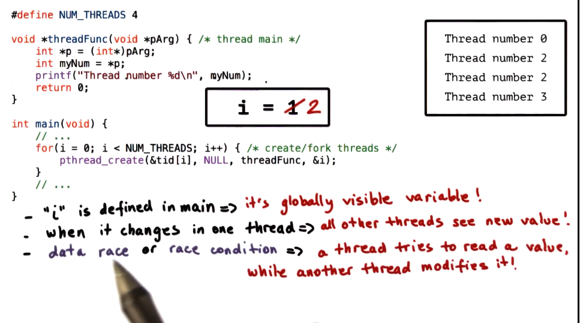
- passing global variables to pthread_create arg is dangerous. May not pass what you expect, as the variable may be updated globally before thread can execute whatever they use it for
- This is called a data race, or race condition. This is when a thread tries to read a value while another thread modifies it
- Fix:
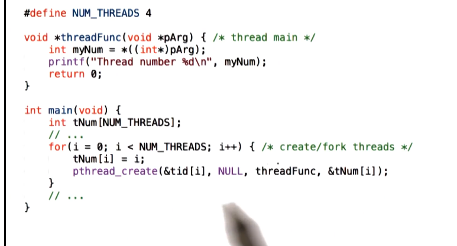
- create static copy of argument that isn’t modified so it will always be passed and consumed correctly by appropriate thread
PThread Mutexes
- Mutexes provide the mechanism to solve mutual exclusion problems among concurrent threads 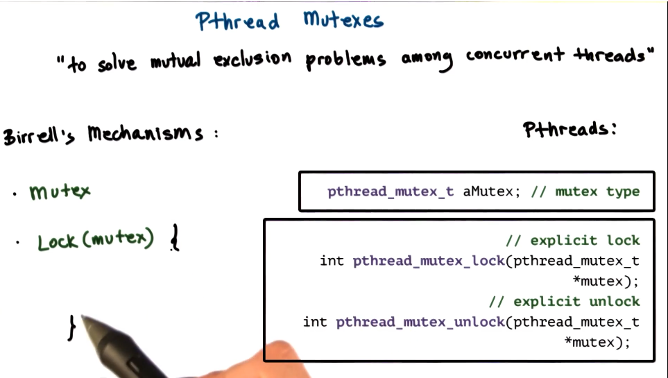 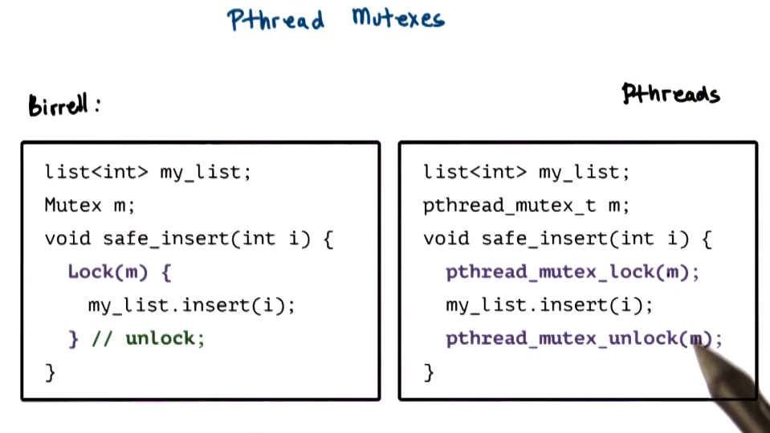 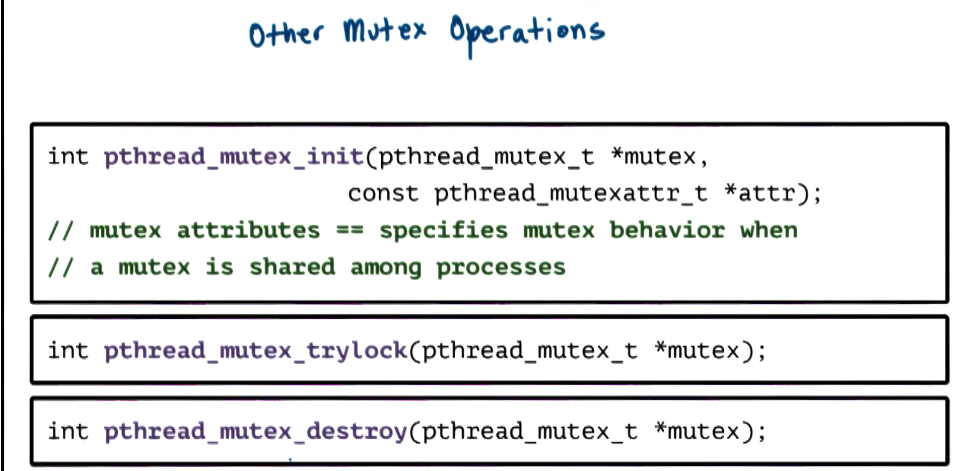
- Mutex safety tips
- each piece shared data should always be accessed through a single mutex
- mutex scope must be visible to all
- globally order locks/unlocks
- for all threads, lock mutexes in order
- always unlock a mutex
- always unlock the correct mutex
PThread Condition Variables
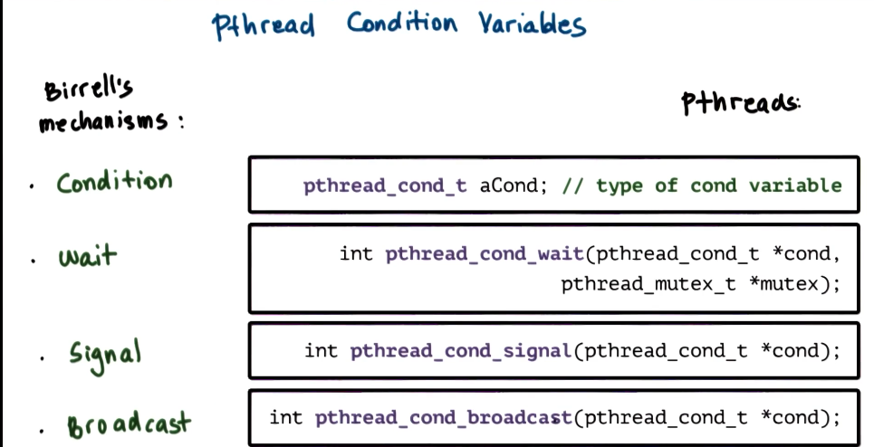 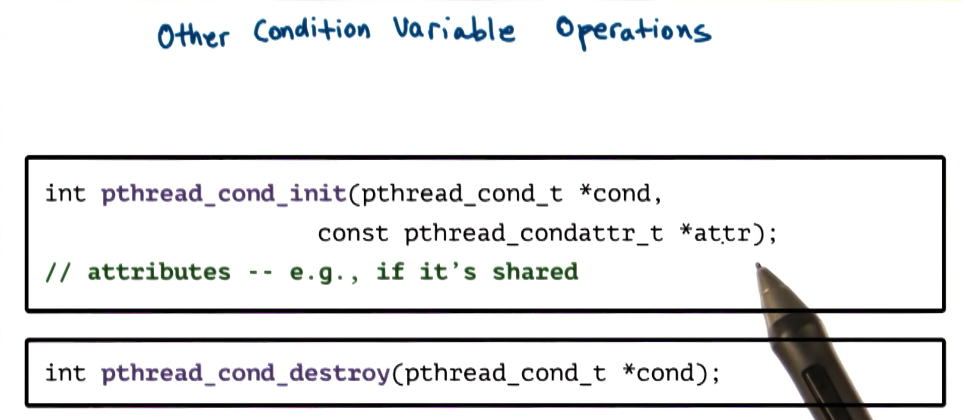
- Condition variable safety tips
- do not forget to notify waiting threads
- predicate change => signal/broadcast correct condition variable
- when in doubt which to use, use broadcast instead of signal
- safer, but will cause performance loss
- You do not need a mutex to signal/broadcast
- may be better to move signal/broadcast out of mutex block sometimes. See example from P2L2
- do not forget to notify waiting threads
Produce and Consumer Example in PThreads
- All source code provided in reference links at top of notes 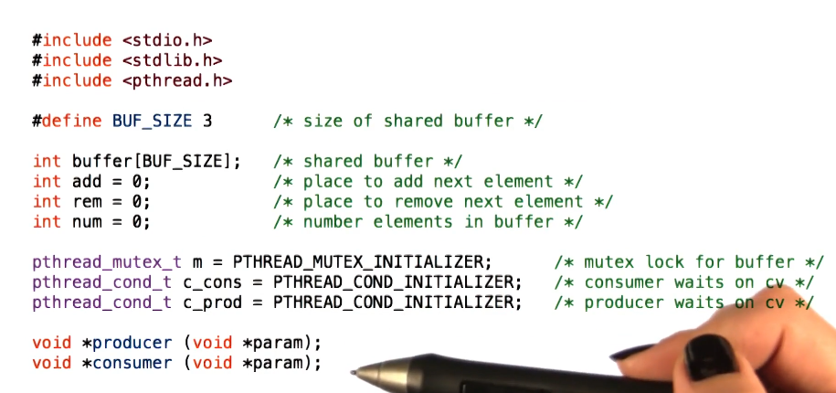 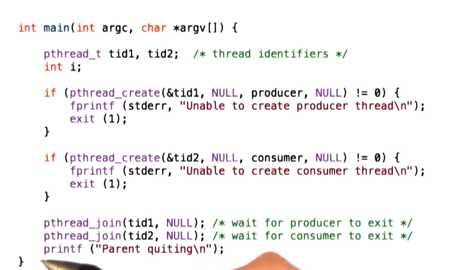 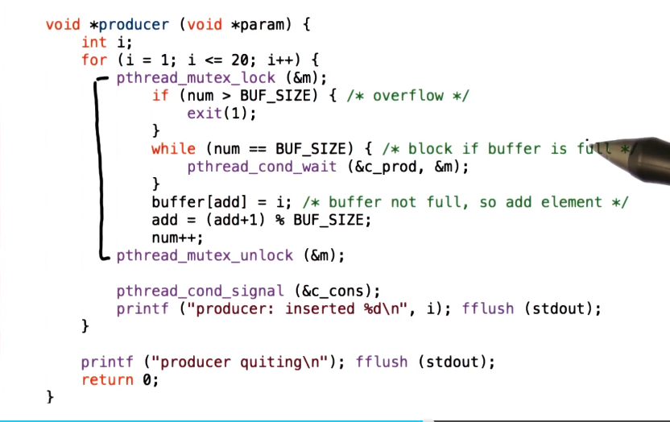 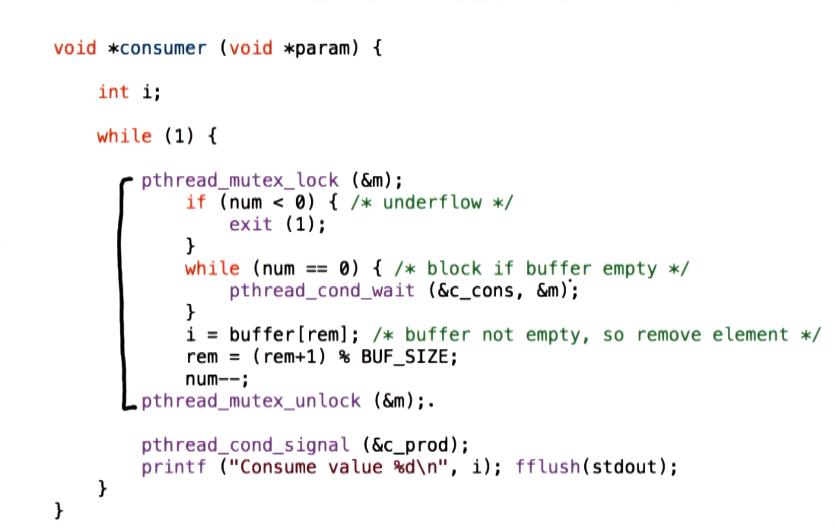